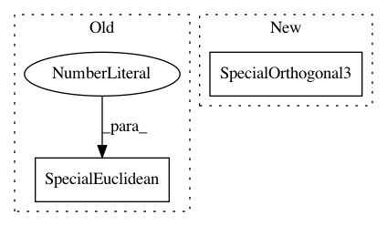

9502ea0dde055ebf547bf01eb9f6b9a3b335fb3b,tests/test_visualization.py,TestVisualizationMethods,setUp,#TestVisualizationMethods#,18
Before Change
def setUp(self):
self.n_samples = 10
self.SO3_GROUP = SpecialOrthogonal(n=3)
self.SE3_GROUP = SpecialEuclidean(n=3)
self.S1 = Hypersphere(dim=1)
self.S2 = Hypersphere(dim=2)
self.H2 = Hyperbolic(dim=2)
After Change
class TestVisualizationMethods(geomstats.tests.TestCase):
def setUp(self):
self.n_samples = 10
self.SO3_GROUP = SpecialOrthogonal3()
self.SE3_GROUP = SpecialEuclidean3()
self.S1 = Hypersphere(dim=1)
self.S2 = Hypersphere(dim=2)
self.H2 = Hyperbolic(dim=2)
In pattern: SUPERPATTERN
Frequency: 3
Non-data size: 2
Instances
Project Name: geomstats/geomstats
Commit Name: 9502ea0dde055ebf547bf01eb9f6b9a3b335fb3b
Time: 2020-04-21
Author: nicolas.guigui@inria.fr
File Name: tests/test_visualization.py
Class Name: TestVisualizationMethods
Method Name: setUp
Project Name: geomstats/geomstats
Commit Name: 4a3efc69541b74cf3e06088e5f6fee53da09739e
Time: 2020-04-21
Author: nicolas.guigui@inria.fr
File Name: examples/loss_and_gradient_se3.py
Class Name:
Method Name:
Project Name: geomstats/geomstats
Commit Name: 4a3efc69541b74cf3e06088e5f6fee53da09739e
Time: 2020-04-21
Author: nicolas.guigui@inria.fr
File Name: geomstats/visualization.py
Class Name:
Method Name: